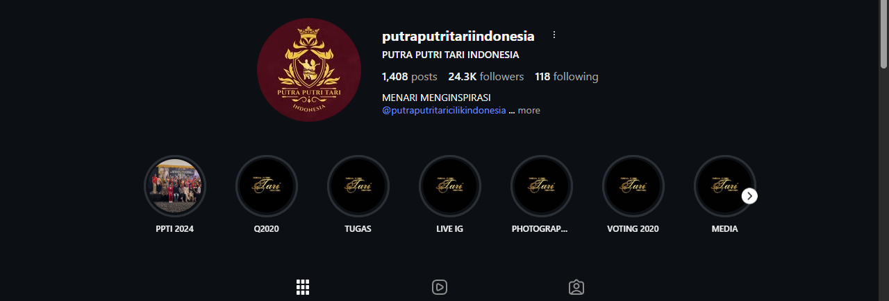

Musik latar: Indonesia Menari
Temukan berbagai kegiatan, pentas tari, dan momen seni budaya yang diselenggarakan oleh Pesona Menari Indonesia.

Klik gambar untuk membuka Instagram
Instagram ini berguna untuk melihat acara-acara, kegiatan, dan momen menarik yang dijalankan oleh Putra Putri Tari Indonesia, mulai dari latihan rutin, pertunjukan tari, workshop budaya, kolaborasi seni, hingga dokumentasi behind-the-scene dalam proses persiapan tampil. Melalui platform ini, berbagai aktivitas seni tari disajikan secara visual dan informatif.
Melalui postingan dan fitur story, pengikut dapat memperoleh inspirasi, informasi jadwal acara, serta perkembangan komunitas tari secara real time. Kehadiran Instagram tidak hanya berfungsi sebagai sarana promosi, tetapi juga sebagai media komunikasi yang memperkuat koneksi antara penonton, peserta, dan seluruh pihak yang memiliki ketertarikan terhadap dunia tari.
Menampilkan berbagai tarian daerah Nusantara yang dibawakan oleh penari terlatih dengan memperhatikan keaslian gerak, busana, dan makna budaya.
Sesi pengenalan sejarah, filosofi, dan nilai budaya di balik setiap tarian yang ditampilkan kepada penonton.
Mendukung berbagai kegiatan budaya seperti acara sekolah, kampus, instansi, hingga event nasional.
Untuk mendapatkan informasi terbaru seputar jadwal pentas tari, undangan acara budaya, dokumentasi kegiatan, serta berbagai kolaborasi yang telah dilakukan, masyarakat dapat mengikuti akun Instagram resmi kami. Informasi disampaikan secara aktual dan interaktif sehingga memudahkan publik mengetahui perkembangan kegiatan seni tari yang sedang maupun akan berlangsung.
Kami terbuka untuk kerja sama dalam berbagai kegiatan budaya dan seni tari di berbagai acara dan instansi.